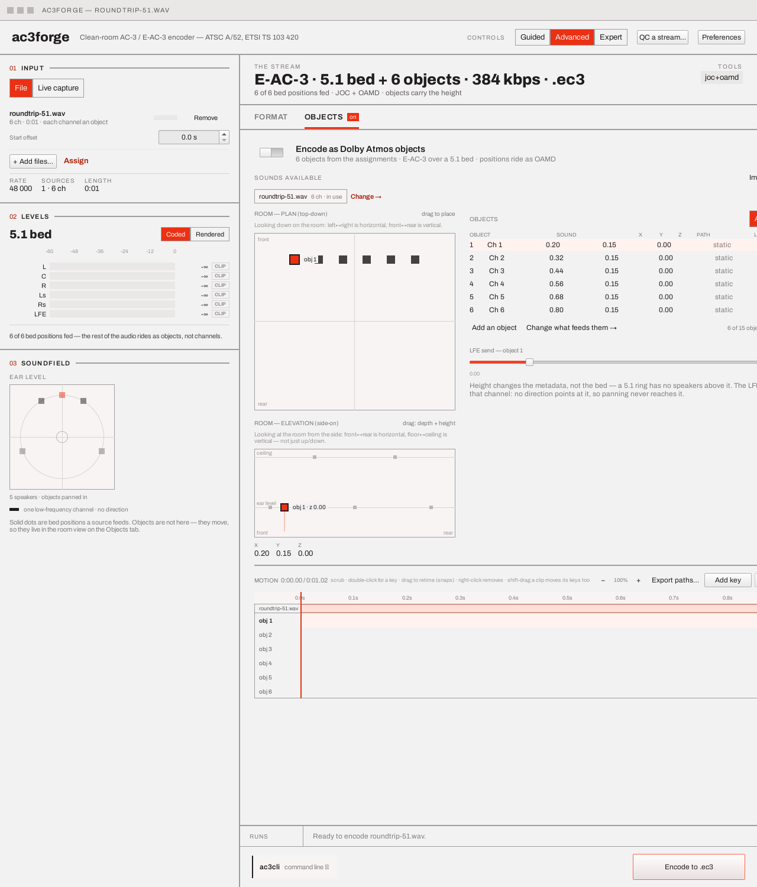

Objects & motion¶
The Objects tab is always present in Advanced and Expert, and reachable from Guided too — step 4
(Movement) drives the same switch, and its trajectory presets author real keyframes onto the
same objects (see below). The tab starts with a single Encode as Dolby Atmos objects switch;
its tab-bar entry carries an on badge while it's active. Off, it's out of the way entirely. On,
it takes over the format choice:

Turning it on fixes the codec and layout — objects always ride as JOC + OAMD side data over a
plain 5.1 E-AC-3 bed, so the Format tab's codec field reads Codec — fixed by object mode, the
bed picker freezes, and the plan strip reads E-AC-3 · 5.1 bed + <n> objects · … · .ec3. If the
bit rate is under 384 kbps, a warning chip appears (Objects over a 5.1 bed want 384 kbps or
better — the metadata competes with the audio for the same frame) with a one-click Set it
fix, right here rather than on the tab the bit-rate control lives on.
If any of "5.1 bed", "JOC", or "OAMD" aren't already clear, read Concepts → Atmos & JOC first — this page assumes that vocabulary.
Objects come from the assignments¶
Which channels ride as objects follows the assignment table. With nothing explicitly assigned, every loaded channel becomes an object — the sensible default for a file full of stems. Once anything is explicit, the table is the whole truth:
- A channel assigned A new object is a dynamic object, placed and moved in the room.
- A channel assigned to a bed position becomes a static object pinned at that speaker's position — in a JOC stream the bed is the panned objects, so "carried as a channel" and "an object that never leaves the L speaker" are the same coded thing. The LFE position pins as a pure LFE send, since no direction points at it.
- A channel assigned Nothing is dropped, with a named warning until that's explicit.
Dynamic objects plus pinned channels together must fit TS 103 420's sixteen-object programme cap (the bed's LFE is one of the sixteen); an encode over it is refused with the count. An empty object list (object mode on, nothing assigned to an object) says so — "Objects come from the assignments — send a sound to 'an object' and it appears here with a place in the room" — with an Open assignments button; Add an object and Change what feeds them → on the tab itself jump to the same table.
Guided's own Movement step offers two one-click ways to fill this table once object mode is on,
rather than requiring a trip to the full assignment table first: Everything moves sends every
loaded channel to a new object (no bed position survives), and Keep the bed, add movers leaves
whatever is already assigned alone and only sends still-unassigned channels — typically a file
added since — to an object. Both write through setAssignment exactly as a hand edit in the table
above would, so either is a starting point, not a locked-in mode.
Sounds available, room plan, elevation, object list¶
- Sounds available (top): one chip per loaded source (
orbit51.wav · 6 ch · in use) with Import audio…, Add live input (switches the rail to Live capture — one input at a time today) and a Change → jump to the assignment table that decides what each sound does. - Room — plan (left): a top-down grid, front/rear. Drag anywhere to place the selected object — or drag the marker itself. If the object has an authored path, a note under the room says the drag edits its idle position, not the path.
- Room — elevation (beneath it): a true side view — the horizontal axis is the room's
depth (
front … rear), so dragging edits y and z, never x.ceiling,ear level(drawn at 66% of the view's height) and the floor are marked, the bed's speakers sit on their lines for context, the selected object carries anobj n · z 0.NNchip, and its drop line reaches the floor — height reads as height above the ground. Height changes the metadata, not the bed: a 5.1 ring has no speakers above it, so two objects at one azimuth and different heights are identical in the downmix and only the object layer tells them apart. X/Y/Z readouts sit below, and they follow the path during preview rather than freezing on the idle position. - Objects (right): one row per object — number, Sound (which loaded channel it is:
Ch <n>with one source,<file> ch <n>with several), X/Y/Z, path (static, the preset's own name likeorbit, or<n> keysfor a hand-authored one), LFE send, and keyframe count. The count line keeps the budget honest — the denominator is what is genuinely left once bed-pinned channels have spent their slots (4 of 13 objects · 2 pinned to the bed), since the bed's LFE is the sixteenth. The selected object gets an LFE send slider (0.00–1.00) — the only route to that channel, since panning never reaches it.
A row's position in this list follows the assignment table — object 3 today might be object 2 tomorrow, if an earlier channel stops feeding an object. Its motion does not follow along: authored keyframes, position and LFE send belong to the actual (source, channel) they were placed on, so reassigning channels around never migrates one sound's path onto a different one, and removing a non-primary source (see Multi-source & assignment) never disturbs a surviving source's motion.
Motion¶
A timeline beneath the object list — a ruler, a clip band per loaded source, one lane per object with its keyframes as rotated squares, and a playhead. It is an editor, not a display.
The timeline's length is derived, never set by hand: it is max(offset + duration) over
every loaded source (see the next section for what "offset" means), falling back to a fixed 8 s
only when nothing loaded has a duration to derive it from — a live session with no source, say. Loading a longer file, or dragging a source's clip band further out, grows
the ruler and every lane along with it; nothing needs re-authoring just because the programme got
longer.
- Click or drag anywhere on the timeline to scrub the playhead (pausing a running preview).
- Double-click a lane to author a key at that instant from the object's current position.
- Drag a key to retime it — the move commits on release, snapped to the current zoom tier (see below), and landing on another key replaces it (one instant, one cue).
- Right-click a key (or select it and press Delete key) to remove it.
- Add key captures the selected object's current position at the playhead. A hand-added key
seeds the same
0.7/√ngain the path-less fallback encodes at, so an object never jumps louder the moment its first cue lands. - Preview plays every object through the Atmos encoder for real — its 5.1 bed through the same monitor path a live session uses, paced in real time — while the plan view, the elevation view and the playhead all follow the same audio clock, not a separate visual clock that could drift from it.
Zoom, pan and snap¶
The ruler starts fit to the whole derived length. Scroll wheel over the timeline zooms, centred on whatever time is under the cursor; + / − / Fit by the Motion header do the same from a click, up to 40×. Past 100% zoom, a thin strip above the lanes becomes a draggable viewport indicator for panning. Ruler ticks promote as the view zooms in — 10 s, then 1 s, then 0.1 s apart — and every snap (key drags, double-click-added keys, clip-band drags) follows the same tiers: 1 s while zoomed out, 0.1 s once zoomed in, down to a 32 ms floor (one 1536-sample OAMD frame at 48 kHz) that no amount of further zooming crosses — finer than that is precision the format cannot actually carry.
Per-source offsets and keyframe timing¶
Each loaded source gets its own clip band at the top of the timeline, spanning its active
range (offset … offset + duration), and its own numeric start offset field on the rail's
source row (see Loading a source). Drag a clip band (or edit the
rail field directly) to shift when that source's channels start — encoded as leading silence
ahead of its own audio, never as a change to the audio itself, the same way ac3cli's offset=
token works (see CLI → Options & grammars).
Keyframe times are programme-absolute, on purpose. Sliding a clip band does not move that source's objects' keys by default — a key at 4.2 s means 4.2 s into the programme, regardless of which source is playing there. To bring an object's motion along with its source, hold Shift while dragging the clip band; every key belonging to that source's objects shifts by the same delta, clamped so none lands before 0. Without Shift, a source slides freely under motion that was already authored to land where it lands.
Trajectory presets¶
Guided step 4 offers trajectory presets — Stay put, Circle the room (one lap every eight seconds), Lift overhead (floor to ceiling and back every eight seconds), and Place them myself, which is this tab — that author real keyframes through the same API, so a preset is a starting point on this timeline, not a separate motion system. For a file source, a preset repeats its eight-second cycle in whole laps across the entire derived programme length, ending exactly at the programme's own end rather than cutting off mid-turn; a live session has no such length, so its presets simply loop the one fixed cycle for as long as the session runs. A path a preset authored keeps the preset's name in the object table until a hand edit makes it something else.
Export paths¶
Export paths… writes every dynamic object's current motion — or, for a path-less object, its
static position as a single time-0 keyframe — to a file ac3cli atmos-path and atmos-encode
read. Which form depends on the name you save under: a .json name writes the
ac3::oba::ObjectScene form (named objects, per-segment interpolation, a scene orientation — see
Spatial & Atmos objects), and anything else
writes the keyframe columns this export has always produced (object_index time_s x y z gain
lfe_send, one line per keyframe, addressed by each object's flat WAV channel index). ac3cli
tells the two apart by their first character rather than their suffix, so either file works
wherever the other does. JSON identifies an object by its position in the array rather than by an
index column, so where the column form simply skips a bed-pinned channel, the JSON form writes it
as a silent object holding at room centre — keeping every later object at the index a plain
atmos-encode run addresses it by. Once exported, the command bar's atmos-encode line
names that file as its trailing argument, so the line it shows is finally something that
reproduces this tab's authored motion from the command line, not just a static per-channel
placement. See CLI → atmos-encode for the argument itself.
Author a path / Drive it live (top right) are the two ways to get motion in. Live driving needs a monitored capture — the option points at Live session rather than offering a dead control; during a live Atmos session the room is dragged in real time instead of keyframed.
See Spatial & Atmos objects for the library API this timeline
is a UI over — Keyframe/KeyframePath per object, and ObjectScene for the scene the export
writes.
Next¶
Live capture & session — the same object machinery, but driven from a live capture instead of a file.